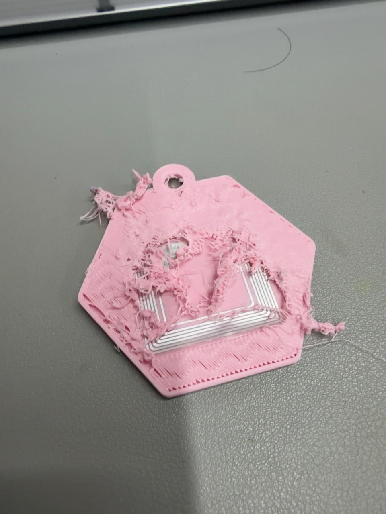
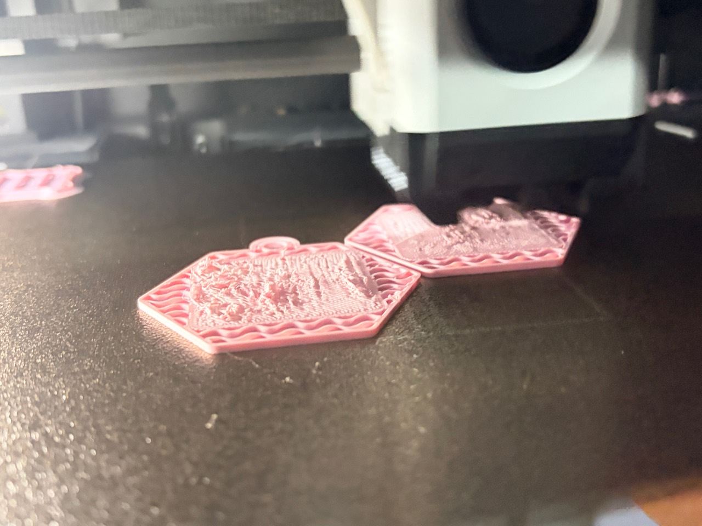

“오류 없음”과
“의도대로”는
다릅니다.
컴퓨터가 읽을 수 있는 파일이어도, 스티커가 들어갈 공간이나 실제 출력 결과까지 보장하지는 않습니다.
원래 Claude 제작기의 핵심 교훈
밀봉형→분리형→중간 삽입
v1단단하게 봉인하기+
처음에는 4.0 mm 두께의 밀봉 구조였습니다. 무게와 재료 사용량을 줄이는 것이 다음 과제였습니다.
v2뚜껑을 따로 만들면?+
홈과 뚜껑을 나누니 부품은 두 개가 되었습니다. 별도 조립의 번거로움이 남았습니다.
v3출력 중간에 넣기+
하나의 부품으로 만들되 출력 도중 잠시 멈춰 NFC를 넣는 방식으로 전환했습니다. 홈 높이와 층 경계가 맞지 않았습니다.
v4쌓이는 층에 맞추기+
포켓 높이를 층 경계에 맞춰 멈출 지점을 정했습니다. 설계의 빈 공간이 실제 슬라이스에서도 비어 있는지 확인했습니다.
v5터미널의 인상을 담기+
노트북 화면 문양과 JetBrains Mono 글꼴을 적용하고, 뒷면에 NFC 표시를 넣었습니다.
v6두 가지 색으로 읽히게+
몸체와 글자의 색을 분리하고 선을 보강했습니다. 이후 실제 출력 사진에서 가독성을 다시 점검했습니다.
v1–v6는 원래 Claude 발표자료의 서술 순서입니다. 저장된 STL 파일명과 일부 다릅니다.
실제 출력 · 초기 V6 앞면과 뒷면01V6 → D2 · D3
화면에서는 보이던 글자가
손 안에서는 흐렸습니다.
- 관찰
- 가는 글자와 비슷한 색의 조합은 사진에서도, 실물에서도 읽기 어려웠습니다.
- 수정
- D2에서 글자를 키우고 형태를 단순하게 다듬었습니다. 보라색 몸체와 검은 글자로 대비를 높이는 방향을 선택하고 D3로 이어갔습니다.
- 확인
- 읽기 쉬운 방향을 사용자가 선택했습니다. 이후 샘플에서도 표면 품질은 계속 확인해야 했습니다.
POCKET STUDY 설계 변경 개념도 · 당시 원형 태그용 깊이 비교, 비례는 설명용02D3 → D4
얇은 스티커인데,
홈이 이렇게 깊어야 할까?
- 관찰
- 사용자가 얇은 NFC 스티커에 비해 포켓이 깊고, 붙이기 불편하다고 느꼈습니다.
- 수정
- D4에서 덮개 높이는 유지하고 바닥을 올려, 홈 깊이를 0.80 mm에서 0.48 mm로 줄였습니다.
- 확인
- 삽입 작업을 쉽게 하려는 변경입니다. 얕은 홈 자체가 덮개 출력 품질을 보장하는 것은 아닙니다.
LETTERING STUDY> 4060|‘40601’로 읽힌 커서
↓> 4060프롬프트와 숫자만 남기기
문구 비교 · 원래 글꼴과 실제 출력 크기를 재현한 도면은 아닙니다03D5 / PROMPT ONLY
커서 하나가,
다른 숫자로 읽혔습니다.
- 관찰
- 오른쪽의 세로 커서가 숫자 1처럼 보여, 로고가 ‘40601’로 읽혔습니다.
- 수정
- D5에서 커서를 제거했습니다. 터미널의 인상은 앞쪽의 > 기호로 남겼습니다.
- 확인
- 사용자가 선택한 문구는 > 4060. 뒤의 샘플 사진에서도 커서가 빠진 모습을 볼 수 있습니다.
INSERTION ACCESS멈춘 뒤 작업판을 내려
스티커를 넣을 여유를 만들기.
작업 공간 개념도 · 도해의 이동 거리와 비율은 실제 축척이 아닙니다04D4 · D5 → D6
손이 들어갈 공간도
설계의 일부였습니다.
- 관찰
- 50 mm 하강으로는 넣기 불편했고, 150 mm 설정도 실제 이동이 기대와 다른지 점검할 필요가 있었습니다.
- 수정
- D6에서는 정지 위치를 기준으로 150 mm 내려갔다가 돌아오는 상대 이동 명령을 구성했습니다.
- 확인
- 사용자가 D6 출력이 잘 된다고 확인하고, 첫 최종 출력 기준본으로 채택했습니다. 모든 후속 버전의 성공을 뜻하지는 않습니다.
D6 · 사용자가 채택한 첫 출력 기준본

실제 출력 · 35 mm 사각 태그 시험 중 드러난 덮개 실패05D7 → D8 / 35 mm SQUARE
스티커가 바뀌니,
키링도 다시 커졌습니다.
- 관찰
- 원형 태그 대신 35 mm 사각 스티커를 쓰자, D7의 새 삽입 영역이 기존 외곽에 너무 가까워졌습니다.
- 수정
- D8은 몸체를 약 60 mm 크기로 넓혀 사각 스티커가 들어갈 공간을 확보했습니다.
- 확인
- 실제 시험에서는 덮개가 뜯기고 태그가 드러났습니다. 공간을 확보하는 것과 안정적으로 덮는 것은 별개의 과제였습니다.
사각 태그용 · 재시험 필요

실제 출력 · D9 포켓 위를 덮는 구간의 뭉침06D8 → D9 / STILL LEARNING
덮는 순간,
필라멘트가 뭉쳤습니다.
- 관찰
- 뒷면 글자 맞물림을 수정한 뒤에도, 포켓을 덮을 때 플라스틱이 평평하게 놓이지 않았습니다.
- 수정
- D9에서 글자와 몸체가 맞닿는 구조, 포켓 여유를 손봤습니다. 두 색 모두 Matte로 바꾼 시험도 진행했습니다.
- 확인
- 뭉침이 다시 관찰됐습니다. 스티커 높이, 첫 덮개 경로와 재개 동작을 함께 검토해야 합니다. 사진만으로 습기나 포켓 깊이를 원인으로 확정하지 않았습니다.
D9 · 해결되지 않은 출력 문제
03 / INSIDE THE KEYCHAIN
한 겹씩 쌓고,
잠깐 멈추고.
여러 장의 종이를 겹치면 두께가 생기듯, 프린터는 얇은 층을 차례로 쌓습니다. 그 사이에 NFC가 들어갈 자리를 남깁니다.
NFC란? 휴대폰을 가까이 대면 저장해 둔 링크가 열리는 작은 태그입니다.
00겉으로 보이지 않는 세 층
몸체 바닥, 얇은 NFC 스티커, 그리고 덮개. 버튼을 눌러 제작 순서를 살펴보세요.
01스티커가 앉을 바닥
먼저 몸체와 포켓 바닥을 만듭니다. 스티커를 붙일 면이 평평하고, 위를 덮을 공간이 남아 있어야 합니다.
02잠시 멈추고, 평평하게
덮개를 출력하기 전에 멈춰 스티커를 붙입니다. 칩과 모서리까지 출력 경로보다 낮게 놓였는지 확인합니다.
03위를 덮는 순간이 관건
출력을 재개해 안에 봉인합니다. 빈 공간을 가로지르는 첫 줄이 안정적으로 놓여야 합니다. D9에서는 이 구간에 뭉침이 관찰됐습니다.
D6에서는 12층 후, 13층 전에 삽입하도록 설정했습니다. 새 버전의 정지 지점은 실제 슬라이스로 다시 확인해야 합니다.
구조 이해를 위한 개념도 · 실제 치수와 간격은 다릅니다.
04 / MADE REAL
시도를 쌓아,
완성한 키링.
글자를 다듬고, 색을 고르고, 고리를 연결했습니다.
출력과 조립, 개별 포장까지 마친 실제 결과물입니다.
사용자가 ‘최종 결과물’로 공유한 실물 사진입니다. 색상별 모습과 조립·포장 상태를 확인할 수 있습니다.
PRINT / ASSEMBLY / PACKAGING
아이디어가 손에 잡히는 결과로.
골드와 블루, 라벤더·핑크 조합으로 출력한 키링에 금속 고리를 달았습니다. 앞면에는 4060 AI LAB, 뒷면에는 NFC TAP HERE를 담고, 일부는 개별 포장까지 마쳤습니다.
THE RECORD CONTINUES
완성품과 실험 기록을 함께 남깁니다.
D6는 처음 채택한 출력 기준본입니다. 위 사진의 개별 설계 버전은 따로 지정하지 않았으며, 앞서 기록한 D9 덮개 문제와 NFC 인식 여부는 별도의 검증 기록으로 남깁니다.
SAME CURIOSITY. ONE MORE TRY.
한 번의 완성보다,
한 번 더 확인한 기록.
Claude에서 시작한 아이디어를 Codex로 이어받아,
파일과 출력 경로, 그리고 실물을 함께 살펴봤습니다.
실험 기록 다시 보기 ↑
{kind=link}
{kind=link}
{kind=link}